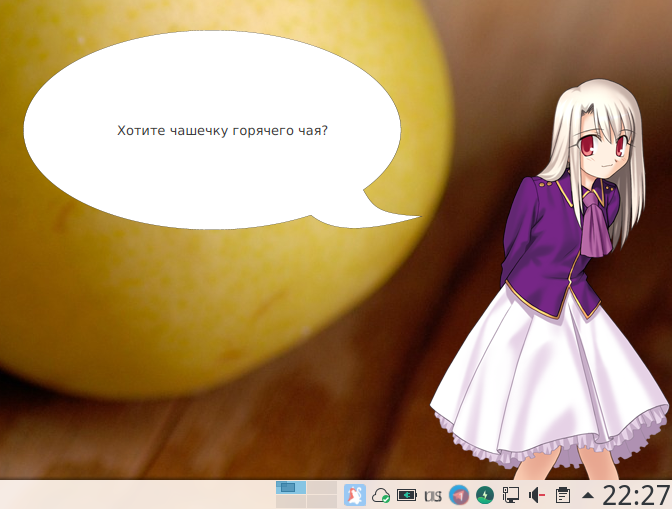

DeskChan - это ПО с открытым исходным кодом, которое представляет из себя виртуального цифрового помощника, который способен взаимодействовать с пользователем, системой и другими приложениями.
Сейчас проект DeskChan нуждается в человеческих ресурсах - в художниках, писателях и программистах (в первую очередь Java и Groovy). Если вы умеете что-то из этого, то добро пожаловать во Флудилку - там вы сможете поговорить с администрацией и получить дальнейшие указания по сотрудничеству. Если же вы не умеете ничего из вышеперечисленного, но вам очень хочется помочь, то вы можете произвести добровольное пожертвование по нижеуказанным реквизитам.
Важно отметить тот факт, что на текущем этапе развития у проекта нет острой потребности в финансовых ресурсах и ваше пожертвование вряд ли значительно ускорит разработку (разве что если речь будет идти о совсем больших суммах), но вы всё равно можете его сделать, потенциально в будущем именно ваши пожертвования могут оказать значительное влияние на судьбу проекта (покупка доменов, оплата серверов, просто мотивация для разработчиков), но не сегодня.
Впрочем, если ты не подходишь ни под один пункт, но тоже хочешь помочь проекту своим трудом, то всё равно обращайся к нам - мы постараемся найти тебе занятие ;-)
Более подробную информацию о списке вакансий и том, чем вам примерно придётся заниматься, вы можете прочитать по этой ссылке.
TulpaWiki - создание помощника нетехническими методами